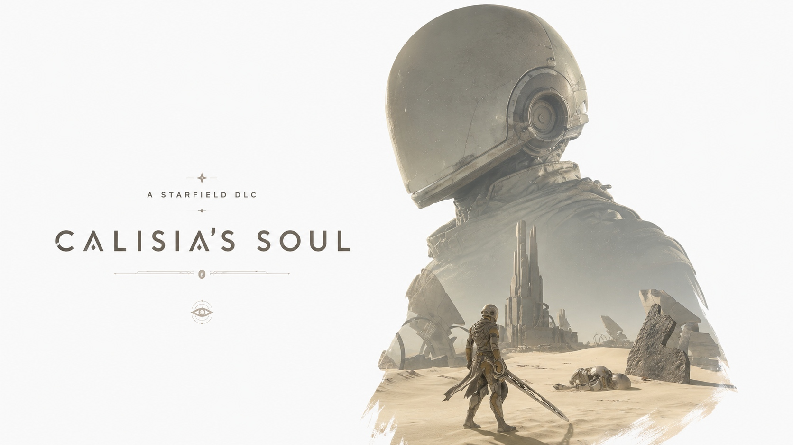

Community Terminal
Message
Board
Leave feedback, ideas, collaboration notes or requests for future Starfield releases.
Public Board
Community Messages
Messages are synced through GitHub Discussions, so every visitor sees the same public board.